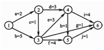
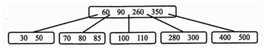
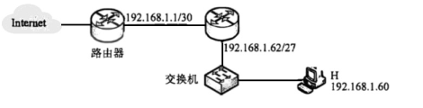
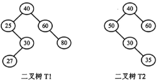
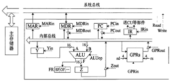
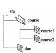
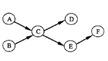
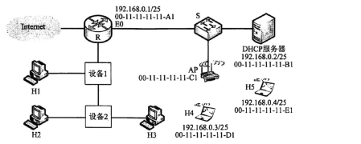

2022年全国硕士研究生入学统一考试
计算机学科专业基础综合试题
一、单项选择题（1～40小题，每小题2分，共80分。下列每小题给出的四个选项中，只有一项符合题目要求）
1．下列程序段的时间复杂度是______。
int sum = 0;
for (int i = 1; i < n; i *= 2)
for (int j = 0; j < i; j++)
sum++;\displaystyle O(\log n)\displaystyle O(n)\displaystyle O(n\log n)\displaystyle O(n^2)2．给定有限符号集S，in 和out 均为S 中所有元素的任意排列。对于初始为空的栈ST，下列叙述中，正确的是______。
3．若结点p 与q 在二叉树T 的中序遍历序列中相邻，且p 在q 之前，则下列p 与q 的关系中，不． 可能的是______。 I. q 是p 的双亲 II. q 是p 的右孩子 III. q 是p 的右兄弟 IV. q 是p 的双亲的双亲
4．若三叉树T 中有244 个结点（叶结点的高度为1），则T 的高度至少是______。
5．对任意给定的含n（n > 2）个字符的有限集S，用二叉树表示S 的哈夫曼编码集和定长编码集， 分别得到二叉树T1 和T2。下列叙述中，正确的是______。
6．对于无向图G = (V, E)，下列选项中，正确的是______。
7．下图是一个有10 个活动的AOE 网，时间余量最大的活动是______。

8．在下图所示的5 阶B 树T 中，删除关键字260 之后需要进行必要的调整，得到新的B 树T1。下列选项中，不可能是T1 根结点中关键字序列的是______。

9．下列因素中，影响散列（哈希）方法平均查找长度的是______。 I. 装填因子 II. 散列函数 III. 冲突解决策略
10．使用二路归并排序对含n 个元素的数组M 进行排序时，二路归并操作的功能是______。
11．对数据进行排序时，若采用直接插入排序而不采用快速排序，则可能的原因是______。 I. 大部分元素己有序 II. 待排序元素数量很少 III. 要求空间复杂度为O(1) IV. 要求排序算法是稳定的
12．某计算机主频为1GHz，程序p 运行过程中，共执行了10000 条指令，其中，80%的指令执行平均需1 个时钟周期，20%的指令执行平均需10 个时钟周期。程序P 的平均CPI 和CPU 执行时间分别是______。
\displaystyle 28\,\mu\mathrm{s}\displaystyle 28\,\mu\mathrm{s}13．32位补码所能表示的整数范围是______。
\displaystyle -2^{32}\sim2^{31}-1\displaystyle -2^{31}\sim2^{31}-1\displaystyle -2^{32}\sim2^{32}-1\displaystyle -2^{31}\sim2^{32}-114．－0.4375 的IEEE 754 单精度浮点数表示为______。
15．某计算机主存地址为24位，采用分页虚拟存储管理方式，虚拟地址空间大小为4GB，页大小为4KB，按字节编址。某进程的页表部分内容如下表所示。
| 虚页号 | 实页号（页框号） | 存在位 |
|---|---|---|
| 82 | 024H | 0 |
| … | … | … |
| 129 | 180H | 1 |
| 130 | 018H | 1 |
当CPU访问虚拟地址0008 2840H时，虚–实地址转换的结果是______。
16．若计算机主存地址为32 位，按字节编址，某Cache 的数据区容量为32KB，主存块大小为64B， 采用8 路组相联映射方式，该Cache 中比较器的个数和位数分别为______。
17．某内存条包含8 个8192×8192×8 位的DRAM 芯片，按字节编址，支持突发（burst）传送方式，对应存储器总线宽度为64 位，每个DRAM 芯片内有一个行缓冲区（row buffer）。下列关于该内存条的叙述中，不正确的是______。
18．下列选项中，属于指令集体系结构（ISA）规定的内容是______。 I. 指令字格式和指令类型 II. CPU 的时钟周期 III. 通用寄存器个数和位数 IV. 加法器的进位方式
19．设计某指令系统时，假设采用16 位定长指令字格式，操作码使用扩展编码方式，地址码为6 位，包含零地址、一地址和二地址3 种格式的指令。若二地址指令有12 条，一地址指令有254 条，则零地址指令的条数最多为______。
20．将高级语言源程序转换为可执行目标文件的主要过程是______。
21．下列关于中断I/O 方式的叙述中，不正确的是______。
22．下列关于并行处理技术的叙述中，不正确的是______。
23．下列关于多道程序系统的叙述中，不正确的是______。
24．下列选项中，需要在操作系统进行初始化过程中创建的是______。
25．进程P0、P1、P2和P3进入就绪队列的时刻、优先级（值越小优先权越高）及CPU执行时间如下表所示。
| 进程 | 进入就绪队列的时刻 | 优先级 | CPU执行时间 |
|---|---|---|---|
| P0 | 0ms | 15 | 100ms |
| P1 | 10ms | 20 | 60ms |
| P2 | 10ms | 10 | 20ms |
| P3 | 15ms | 6 | 10ms |
若系统采用基于优先权的抢占式进程调度算法，则从0ms时刻开始调度，到4个进程都运行结束为止，发生进程调度的总次数为______。
26．系统中有三个进程P0、P1、P2及三类资源A、B、C。若某时刻系统分配资源的情况如下表所示，则此时系统中存在的安全序列的个数为______。
| 进程 | 已分配A | 已分配B | 已分配C | 尚需A | 尚需B | 尚需C | 可用A | 可用B | 可用C |
|---|---|---|---|---|---|---|---|---|---|
| P0 | 2 | 0 | 1 | 0 | 2 | 1 | 1 | 3 | 2 |
| P1 | 0 | 2 | 0 | 1 | 2 | 3 | |||
| P2 | 1 | 0 | 1 | 0 | 1 | 3 |
27．下列关于CPU 模式的叙述中，正确的是______。
28．下列事件或操作中，可能导致进程P 由执行态变为阻塞态的是______。 I. 进程P 读文件 II. 进程P 的时间片用完 III. 进程P 申请外设 IV. 进程P 执行信号量的wait()操作
29．某进程访问的页b 不在内存中，导致产生缺页异常，该缺页异常处理过程中不一定包含的操作是______。
30．下列选项中，不会影响系统缺页率的是______。
31．执行系统调用的过程涉及下列操作，其中由操作系统完成的是______。 I. 保存断点和程序状态字 II. 保存通用寄存器的内容 III. 执行系统调用服务例程 IV. 将CPU 模式改为内核态
32．下列关于驱动程序的叙述中，不正确的是______。
33．在ISO/OSI 参考模型中，实现两个相邻结点间流量控制功能的是______。
34．在一条带宽为200 kHz 的无噪声信道上，若采用4 个幅值的ASK 调制，则该信道的最大数据传输速率是______。
35．若某主机的IP 地址是183.80.72.48，子网掩码是255.255.192.0，则该主机所在网络的网络地址是______。
36．下图所示网络中的主机H 的子网掩码与默认网关分别是______。

37．在SDN 网络体系结构中，SDN 控制器向数据平面的SDN 交换机下发流表时所使用的接口是______。
38．假设主机甲和主机乙已建立一个TCP 连接，最大段长MSS = 1KB,甲一直有数据向乙发送，当甲的拥塞窗口为16KB 时，计时器发生了超时，则甲的拥塞窗口再次增长到16KB 所需要的时间至少是______。
39．假设客户C 和服务器S 已建立一个TCP 连接，通信往返时间RTT=50ms，最长报文段寿命MSL = 800ms，数据传输结束后，C 主动请求断开连接。若从C 主动向S 发出FIN 段时刻算起，则C 和S 进入CLOSED 状态所需的时间至少分别是______。
40．假设主机H 通过HTTP/1.1 请求浏览某Web 服务器S 上的Web 页news408.html，news408 引用了同目录下的1 幅图像，news408.html 文件大小为1MSS（最大段长），图像文件大小为3MSS， H 访问S 的往返时间RTT=10ms，忽略HTTP 响应报文的首部开销和TCP 段传输时延。若H 已完成域名解析，则从H 请求与S 建立TCP 连接时刻起，到接收到全部内容止，所需的时间至少是______。
二、综合应用题（第41～47小题，共70分）
41．（13分）已知非空二叉树T的结点值均为正整数，采用顺序存储方式保存，数据结构定义如下：
typedef struct{ // MAX_SIZE 为已定义常量
int SqBiTNode[MAX_SIZE]; // 保存二叉树结点值的数组
int ElemNum; // 实际占用的数组元素个数
}SqBiTreeT中不存在的结点在数组SqBiTNode中用–1表示。例如，对于下图所示的两棵非空二叉树T1和T2：

T1的存储结果如下：
| T1.SqBiTNode | 40 | 25 | 60 | –1 | 30 | –1 | 80 | –1 | –1 | 27 |
T1.ElemNum = 10。T2的存储结果如下：
| T2.SqBiTNode | 40 | 50 | 60 | –1 | 30 | –1 | –1 | –1 | –1 | –1 | 35 |
T1.ElemNum = 11。请设计一个尽可能高效的算法，判断一棵采用这种方式存储的二叉树是否为二叉搜索树，若是，则返回true，否则，返回false。要求：（1）给出算法的基本设计思想。（2）根据设计思想，采用C或C++语言描述算法，关键之处给出注释。
42．（10分）现有\displaystyle n（\displaystyle n>100000）个数保存在一维数组M中，需要查找M中最小的10个数，请回答下列问题：（1）设计一个完成上述查找任务的算法，要求平均情况下的比较次数尽可能少，简述算法思想（不需要程序实现）。（2）说明你所设计的算法平均情况下的时间复杂度和空间复杂度。
43．（15分）某CPU中部分数据通路如题43图所示，其中，GPRs为通用寄存器组；FR为标志寄存器，用于存放ALU产生的标志信息；带箭头虚线表示控制信号，如控制信号Read、Write分别表示主存读、主存写，MDRin表示内部总线上数据写入MDR，MDRout表示MDR的内容送内部总线。

请回答下列问题：（1）设ALU的输入端A、B及输出端F的最高位分别为\displaystyle A_{15}、\displaystyle B_{15}及\displaystyle F_{15}，FR中的符号标志和溢出标志分别为SF和OF，则SF的逻辑表达式是什么？A加B、A减B时OF的逻辑表达式分别是什么？要求逻辑表达式的输入变量为\displaystyle A_{15}、\displaystyle B_{15}及\displaystyle F_{15}。（2）为什么要设置暂存器Y和Z？（3）若GPRs的输入端rs、rd分别为所读、写的通用寄存器的编号，则GPRs中最多有多少个通用寄存器？rs和rd来自图中的哪个寄存器？已知GPRs内部有一个地址译码器和一个多路选择器，rd应连接地址译码器还是多路选择器？（4）取指令阶段（不考虑PC增量操作）的控制信号序列是什么？若从发出主存读命令到主存读出数据并传送到MDR共需5个时钟周期，则取指令阶段至少需要几个时钟周期？（5）图中控制信号由什么部件产生？图中哪些寄存器的输出信号会连到该部件的输入端？
44．（8 分）假设某磁盘驱动器中有4 个双面盘片，每个盘面有20000 个磁道，每个磁道有500 个扇区，每个扇区可记录512 字节的数据，盘片转速为7200RPM（转/分），平均寻道时间为5ms。请回答下列问题。 （1）每个扇区包含数据及其地址信息，地址信息分为3 个字段。这3 个字段的名称各是什么？ 对于该磁盘，各字段至少占多少位？ （2）一个扇区的平均访问时间约为多少？ （3）若采用周期挪用DMA 方式进行磁盘与主机之间的数据传送，磁盘控制器中的数据缓冲区大小为64 位，则在一个扇区读写过程中，DMA 控制器向CPU 发送了多少次总线请求？若CPU 检测到DMA 控制器的总线请求信号时也需要访问主存，则DMA 控制器是否可以获得总线使用权？为什么？
45．（7分）某文件系统的磁盘块大小为4KB，目录项由文件名和索引结点号构成，每个索引结点占256字节，其中包含直接地址项10个，一级、二级和三级间接地址项各1个，每个地址项占4字节。该文件系统中子目录stu的结构如题45（a）图所示，stu包含子目录course和文件doc，course子目录包含文件course1和course2。各文件的文件名、索引结点号、占用磁盘块的块号如题45（b）图所示。

| 文件名 | 索引结点号 | 磁盘块号 |
|---|---|---|
| stu | 1 | 10 |
| course | 2 | 20 |
| course1 | 10 | 30 |
| course2 | 100 | 40 |
| doc | 10 | x |
请回答下列问题：（1）目录文件stu中每个目录项的内容是什么？（2）文件doc占用的磁盘块的块号x的值是多少？（3）若目录文件course的内容已在内存，则打开文件course1并将其读入内存，需要读几个磁盘块？说明理由。（4）若文件course2的大小增长到6MB，则为了存取course2需要使用该文件索引结点的哪几级间接地址项？说明理由。
46．（8分）某进程的两个线程T1和T2并发执行A、B、C、D、E和F共6个操作，其中T1执行A、E和F，T2执行B、C和D。题46图表示上述6个操作的执行顺序所必须满足的约束；C在A和B完成后执行，D和E在C完成后执行，F在E完成后执行。请使用信号量的wait()、signal()操作描述T1和T2之间的同步关系，并说明所用信号量的作用及其初值。

47．（9分）网络拓扑如题47图所示，R为路由器，S为以太网交换机，AP是802.11接入点，路由器的E0接口和DHCP服务器的IP地址配置如图中所示；H1与H2属于同一个广播域，但不属于同一个冲突域；H2和H3属于同一个冲突域；H4和H5已经接入网络，并通过DHCP动态获取了IP地址。现有路由器、100BaseT以太网交换机和100BaseT集线器（Hub）三类设备各若干台。

请回答下列问题：（1）设备1和设备2应该分别选择哪类设备？（2）若信号传播速度为\displaystyle 2\times10^8\,\mathrm{m/s}，以太网最小帧长为64B，信号通过设备2时会产生额外的\displaystyle 1.51\,\mu\mathrm{s}时间延迟，则H2与H3之间可以相距的最远距离是多少？（3）在H4通过DHCP动态获取IP地址过程中，H4首先发送了DHCP报文M，M是哪种DHCP报文？路由器E0接口能否收到封装M的以太网帧？S向DHCP服务器转发的封装M的以太网帧的目的MAC地址是什么？（4）若H4向H5发送一个IP分组P，则H5收到的封装P的802.11帧的地址1、地址2和地址3分别是什么？